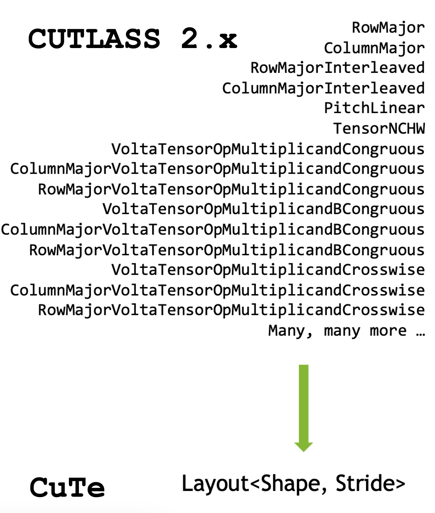

CUTLASS 3.0 Design#
CUTLASS 3.0 is a major enhancement over the abstractions of CUTLASS 2.x and aims to make usage of all layers of the GEMM hierarchy easier and more composable while still achieving peak performance on Hardware.
CUTLASS 3.0 design goals#
CUTLASS 3.0 has the following design goals, in no particular order.
Simplify expressing and manipulating data and thread layouts across the GEMM hierarchy with CuTe layouts and layout algebra.
Improve code readability and learning curve by reducing the number of named types.
Functional correctness by default, actionable static asserts otherwise.
Single, clear points of performance tuning and custom kernel extensions.
Support for NVIDIA Hopper GPUs with great performance using features such as Tensor Cores, tensor memory accelerator, and thread block clusters.
A new Conceptual GEMM Hierarchy#
CUTLASS 2.x decomposes the moving parts of a GEMM operation across a hierarchy that closely mirrors the organization of GPU architectures. This discussed in detail within the CUTLASS 2.x GEMM API documentation. This design, however, sometimes results in a coupling that is too tight to extend to newer GPU features that might not fit into the same architectural hierarchy. For instance, Hopper’s warp-group wide instructions do not naturally fit into any warp or thread layer GEMM concept in CUTLASS 2.x. Even for Volta tensor cores, instructions that atomically exist at the quad-pair granularity are first tiled at the warp level before use. This hints at the brittleness of the abstraction power.
CUTLASS 3.0 detaches its interface layers from the hardware, centering them instead around the natural structure of GEMM algorithms not tied to any particular GPU generation. This makes CUTLASS’s code more robust to GPU architecture evolution, less prone to implementation detail leakage, and provides users with a consistent interface to hardware acceleration regardless of the architecture specific details.
The new conceptual GEMM hierarchy is discussed in detail in the dedicated CUTLASS 3.0 GEMM API documentation readme, along with code examples of the core concepts and types.
Adoption of CuTe Layout and Tensors#
CUTLASS 3.0 introduces a new core library, CuTe, to describe and manipulate tensors of threads and data.
CuTe is a collection of C++ CUDA template abstractions for defining and operating on hierarchically multidimensional layouts of threads and data. CuTe provides Layout and Tensor objects that compactly packages the type, shape, memory space, and layout of data, while performing the complicated indexing for the user.
CUTLASS 3.0 adopts CuTe throughout the GEMM hierarchy in its templates, greatly simplifying the design, improving code composability, and readability. More documentation specific to CuTe can be found in its dedicated documentation directory.

Programming massively parallel systems with various layers of logical thread and data hierarchies is not a trivial task.
cute::Layouts always maintain logical consistency of their coordinates, allowing us to check pre- and post-conditions at compile time for all static inner loops.Explicit thread to data mapping allows users and kernel authors to inspect and reason about operations from a single point in the source code.
Layouts provide a single point of performance tuning, as most optimizations can be done by careful selection of thread and data layouts.
Formalized algebra makes manipulation of and reasoning about thread->data mapping explicit in source code.
Single vocabulary type (
cute::Layout) subsumes every iterator and layout in CUTLASS 2.x CUTLASS 2.x uses many bespoke thread maps, iterators, and data layouts. Iterators are fundamentally 1-D, whereas most layouts we encounter in the GPU hierarchy are fundamentally n-D.
Reducing the number of named types and iterator concepts#
CUTLASS 2.x design preferred introducing bespoke named types for each
architecture specific thread and data layout. For instance, gemm::treadblock namespace
contains implementation for MmaMultistage, MmaPlanarComplexMultistage, MmaPipelined etc.
despite them providing mainloops for GEMMs. To spell these types the same way in generic code,
CUTLASS 2.x provides aliases through its default_x_configuration.h files, however,
these aliases make the code much harder to read as the user has to perform type substitution
mentally in order to understand the codebase.
CUTLASS 3.0 greatly reduces the number of named types used throughout by
Replacing all iterator concepts for all memory domains with
cute::TensorsDispatching mainloop and epilogue implementations on tag-dispatch policies rather than naming new types
Dispatching kernel layer schedules on tag-dispatch policies rather than naming new types
Reducing the number of named types has many benefits:
It makes writing generic code easier, as the primary type names share the same lexical without aliasing through configuration providers.
It flattens the learning curve of CUTLASS by greatly reducing the mental context required as the library only exposes a handful of named types.
It provides a clear, singular extension point for users to plug in their customizations through the dispatch policies.
Correctness by default, Performance through clear, individual points of tuning#
CUTLASS 2.x maintained its thread layouts as implicit indexing math implemented as a part of 1D iterators. This meant that the thread to data layout mapping was implicit in the imperative structure of the C++ code itself and did not have a formal algebra we could use to manipulate these mappings. Each iterator had to re-implement its indexing and mapping logic. This made it hard to learn how this mapping was performed for existing iterators, and even harder to implement custom layout functions for the core inner loops of a GEMM.
CUTLASS 3.0 replaces all iterator concepts from CUTLASS 2.x with a single layout type for thread and data tensors. CuTe’s formalized layout algebra is then used at every layer of the GEMM hierarchy to manipulate the mapping between the two. CuTe layouts always maintain logical consistency, and for fully static layouts (such as in the core unrolled inner loops), provide compile time checks that break builds if this consistency is violated. In this way, CuTe reifies the thread-to-data-layout mapping, makes it easier to write code that is “correct by construction”. If the code compiles, it’s probably correct.
Copyright#
Copyright (c) 2017 - 2025 NVIDIA CORPORATION & AFFILIATES. All rights reserved. SPDX-License-Identifier: BSD-3-Clause
Redistribution and use in source and binary forms, with or without
modification, are permitted provided that the following conditions are met:
1. Redistributions of source code must retain the above copyright notice, this
list of conditions and the following disclaimer.
2. Redistributions in binary form must reproduce the above copyright notice,
this list of conditions and the following disclaimer in the documentation
and/or other materials provided with the distribution.
3. Neither the name of the copyright holder nor the names of its
contributors may be used to endorse or promote products derived from
this software without specific prior written permission.
THIS SOFTWARE IS PROVIDED BY THE COPYRIGHT HOLDERS AND CONTRIBUTORS "AS IS"
AND ANY EXPRESS OR IMPLIED WARRANTIES, INCLUDING, BUT NOT LIMITED TO, THE
IMPLIED WARRANTIES OF MERCHANTABILITY AND FITNESS FOR A PARTICULAR PURPOSE ARE
DISCLAIMED. IN NO EVENT SHALL THE COPYRIGHT HOLDER OR CONTRIBUTORS BE LIABLE
FOR ANY DIRECT, INDIRECT, INCIDENTAL, SPECIAL, EXEMPLARY, OR CONSEQUENTIAL
DAMAGES (INCLUDING, BUT NOT LIMITED TO, PROCUREMENT OF SUBSTITUTE GOODS OR
SERVICES; LOSS OF USE, DATA, OR PROFITS; OR BUSINESS INTERRUPTION) HOWEVER
CAUSED AND ON ANY THEORY OF LIABILITY, WHETHER IN CONTRACT, STRICT LIABILITY,
OR TORT (INCLUDING NEGLIGENCE OR OTHERWISE) ARISING IN ANY WAY OUT OF THE USE
OF THIS SOFTWARE, EVEN IF ADVISED OF THE POSSIBILITY OF SUCH DAMAGE.